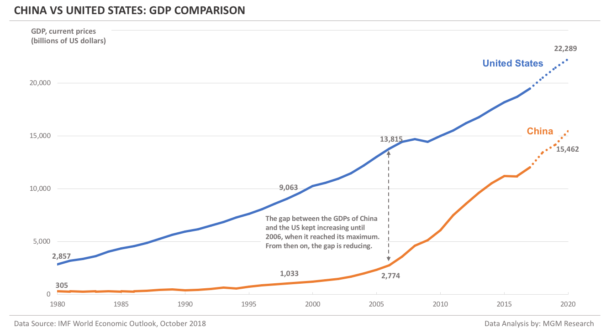

Thucydides’s Trap
GDP Comparison
GDP Military Spending
Opinion Comparison
Counterarguments
Our Team
GDP Comparison

China is Catching Up to America's share of global GDP
- "The gap between the US and China GDP kept increasing until 2006, when it reached its maximum. From then on, the gap has been reducing because China is having more incremental GDP than the US every year."
- "At the end of 2006, China GDP was $2.8 trillion and the US GDP was $13.8 trillion. During the 26 years (1980-2006), China incremental GDP was $2.5 trillion, whereas the US incremental GDP was $11 trillion (As an Incremental GDP calculation example, subtract China GDP of $305 billion in 1980 from its GDP of $2.8 trillion in 2006 to get an incremental GDP of $2.5 trillion). So, the US had over 4-times more incremental GDP than China during the 26 years from 1980 to 2006."
- "By the end of 2020, IMF forecasts that China GDP will reach $15.5 trillion, whereas the US GDP will reach $22.3 trillion. This implies an incremental GDP of $12.7 trillion for China and an incremental GDP of $8.5 trillion for the US, during the 14 years from 2006 to 2020."

Source for image and text can be found at MGM Research
Learn more about our team